1. Overview
Vibe artifacts are projects that AI coding tools publish to Depotex: the code with its memory file, known gaps and screenshots. The Vibe browser, beside Browse in the left menu, is a simple place to find them by project, milestone, date or screenshot. Browse keeps working as before for every other repository type.
Vibe artifacts need an Enterprise license, and an administrator turns them on for the whole installation. On Standard and Pro nothing about them shows: no menu entry, no settings page, and their API answers 402 with the reason vibe_requires_enterprise.
AI coding tools publish and pull projects through the Depotex AI tools (MCP), see Use vibe projects from AI tools; scripts push with three HTTP requests (see Push a check-in).
2. Turn vibe artifacts on or off
- Open the settings — Go to Settings → Repositories → Vibe artifacts (super admins, the repository_settings:manage permission).
- Turn them on — Turn on Turn on vibe artifacts. Vibe appears in the left menu for everyone signed in, on every server at once.
- Turn them off — Clear the switch. The Vibe entry disappears for everyone; what was published is kept and comes back when you turn it on again.
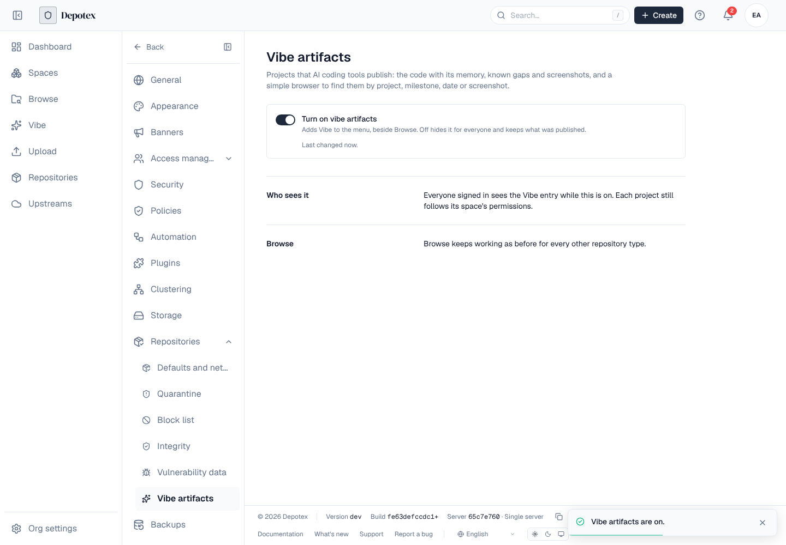
The page shows when the switch last changed. Each change on the page is recorded in the audit log (vibe:update_settings, with what changed).
3. Choose what refuses a push
Under Checks on every push on the same page, two switches decide whether a secret or hidden characters refuse a push (see What every push is checked for). Both are on by default.
- Refuse pushes with a secret: a private key, a token or an .env file with secret values refuses the push. Turned off, the push is stored and the secret shows as a high finding naming the file and line (never the secret itself). The secret is then stored in the check-in, so anyone who can read the project's files can read it.
- Refuse hidden characters in AI instruction files: characters that don't show in AI instruction files refuse the push. Turned off, they show as a high finding instead.
- Turning a switch back on applies to the next push: a check-in that builds on one stored while it was off is refused again until the file is fixed.
- To stop anyone turning them off, a policy on vibe.settings.update can deny the change.
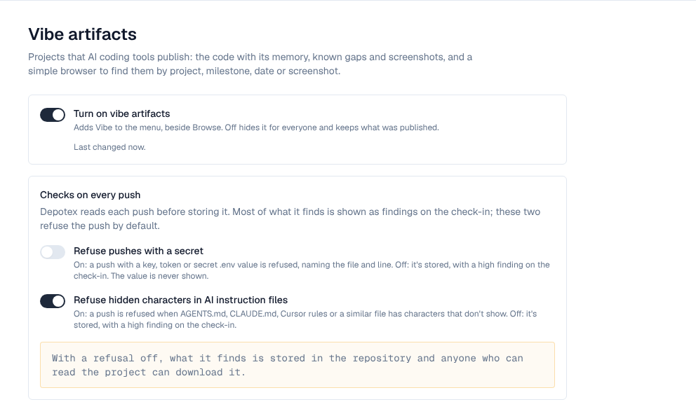
Turn these off only for a short while, for example to publish a project whose test keys are fake. Real secrets in a check-in should be revoked.
4. Keep the typosquat list current
The check that flags packages one letter off a popular one compares names with a list of popular npm and PyPI packages. Depotex has a list built in; set List address under Package list for typosquats to download a newer one from a list your organization or vendor keeps (https only).
- Depotex downloads the list when you save the address, every night with the vibe-package-list job in Scheduler (02:20, while vibe artifacts are on), and when you press Update now. One server downloads it for the whole cluster.
- The request goes through the installation's outbound proxy and trusted certificates (Settings → Repositories) and carries the installation ID in the X-Depotex-Installation-ID header, so the list's server can tell which installation is asking. It sends If-None-Match, so an unchanged list isn't downloaded again.
- The page shows where the list in use came from (built in or downloaded, with its version and how many names), when it was last checked and why the last download failed (not reachable, refused, not found, an error, too large, not a valid list).
- If a download fails, the last list downloaded from the same address keeps being used; with no list from that address, the built-in list is. Clearing the address goes back to the built-in list.
- The downloaded list replaces the built-in one; it doesn't add to it. It isn't signed: only use an address you trust.
The list is a JSON file:
{
"format": 1,
"version": "2026-10-14",
"packages": {
"npm": ["react", "express", "lodash"],
"pypi": ["requests", "numpy", "django"]
}
}Names are compared in lower case (PyPI names normalized); names that aren't valid package names are skipped. Answer 401 or 403 to an installation the server doesn't know, and 304 to a matching If-None-Match. Each change to these settings is recorded as vibe:update_settings; Update now as vibe:refresh_package_list, marked failed when the download fails.
5. Find projects in the Vibe browser
Open Vibe in the left menu. One search box looks through project names, descriptions and tags, milestones, what each check-in changed, and screenshot captions; every word you type must match, and the start of a word is enough (stre finds "Streaks work").
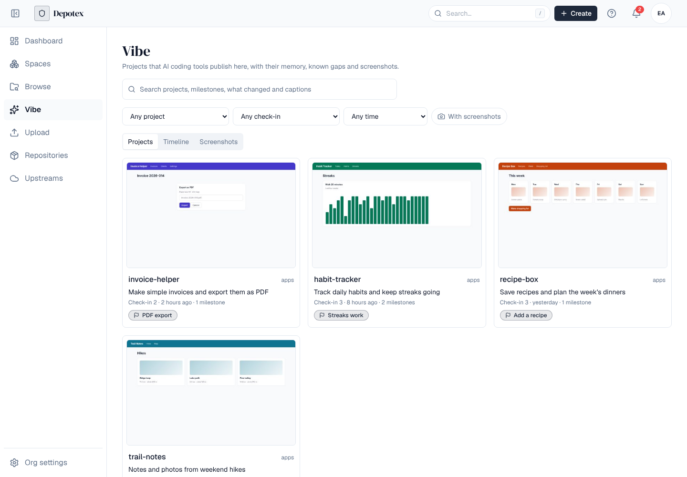
| Filter | What it keeps |
|---|---|
| Project | One project (the list holds the projects you can see) |
| Milestone | Milestones only, or one milestone by name |
| Pushed | Today, the last 7 or 30 days, or dates you pick |
| With screenshots | Only check-ins that have a screenshot |
Three views show what matches:
- Projects: a card per project with its newest screenshot, description, latest check-in and milestone. Projects with the newest matching check-in come first.
- Timeline: every matching check-in, grouped by day, milestones marked with a bar.
- Screenshots: every screenshot, newest first; one opens its check-in at that screenshot. The search looks in each screenshot's own caption.
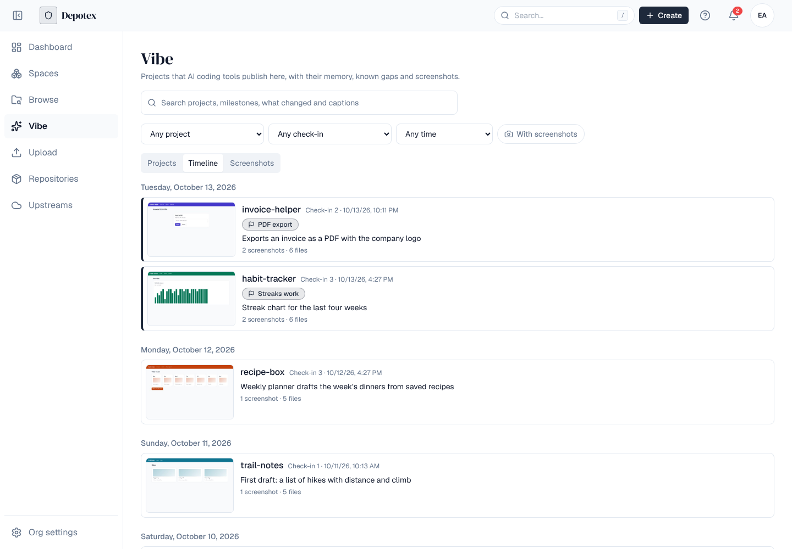
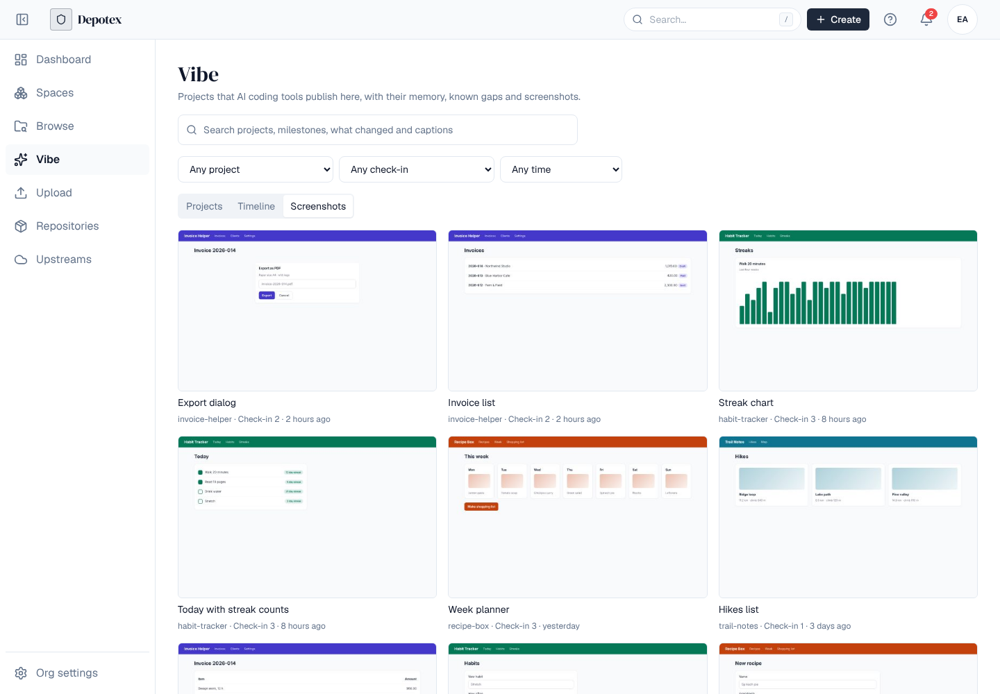
The search and filters are part of the page address, so you can bookmark a search or send it to someone. On a phone the filters fold behind the filter button beside the search box.
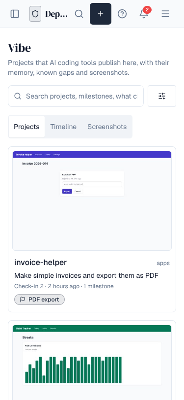
6. Project and check-in pages
A project's page shows its newest screenshot, what the latest check-in changed and How to run it (the run and test commands, each with Copy, and whether the tests passed), then the milestones it reached. Below are its Check-ins, About (the memory file of the latest check-in), What's unfinished (its known gaps file), every Screenshot and the Files of the latest check-in.
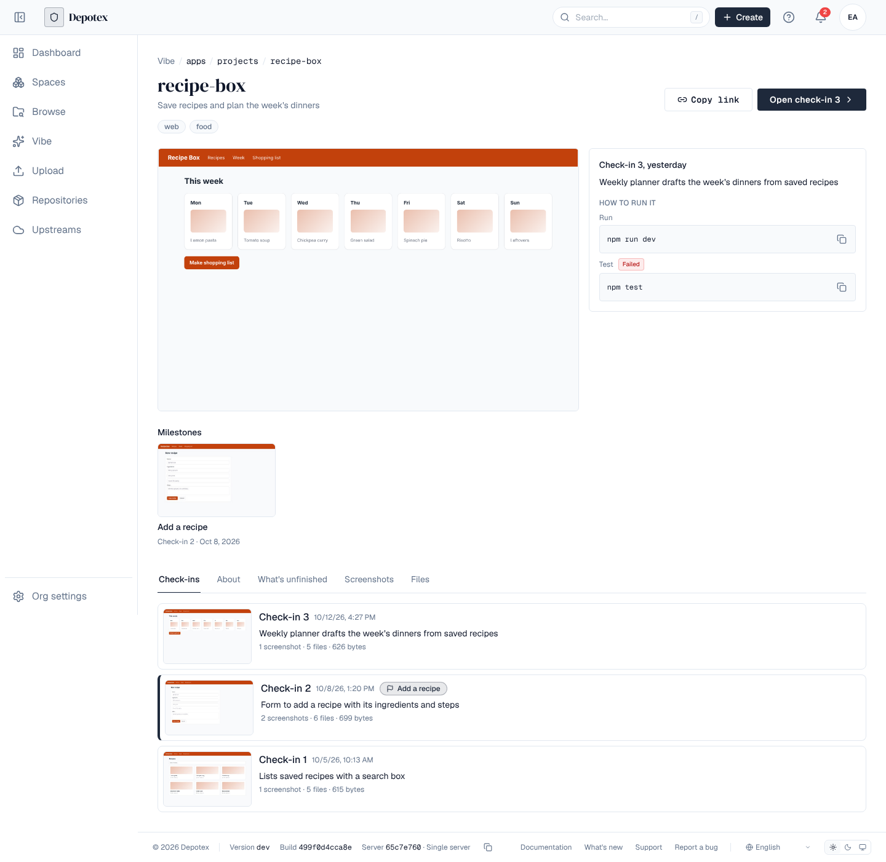
A check-in's page, which the link from every push opens, shows its screenshots full size with their captions (arrows and the strip below switch between them), what changed, who pushed it and when, the check-in it builds on, and how to run it. Its tabs show its memory file, known gaps and files. The memory file is the first of AGENTS.md, CLAUDE.md and README.md at the top of the project; the known gaps file is KNOWN_GAPS.md or GAPS.md.
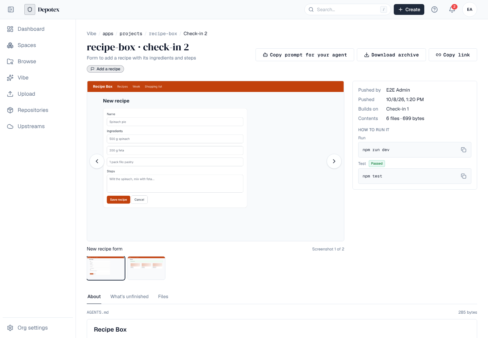
- Copy prompt for your agent copies a short instruction for an AI coding tool: download this check-in, read its memory and known gaps, carry on and push a new check-in to the same project.
- Download archive downloads every file of the check-in as a zip, with the files' modes.
- Copy link copies the page's address (the public URL when one is set).
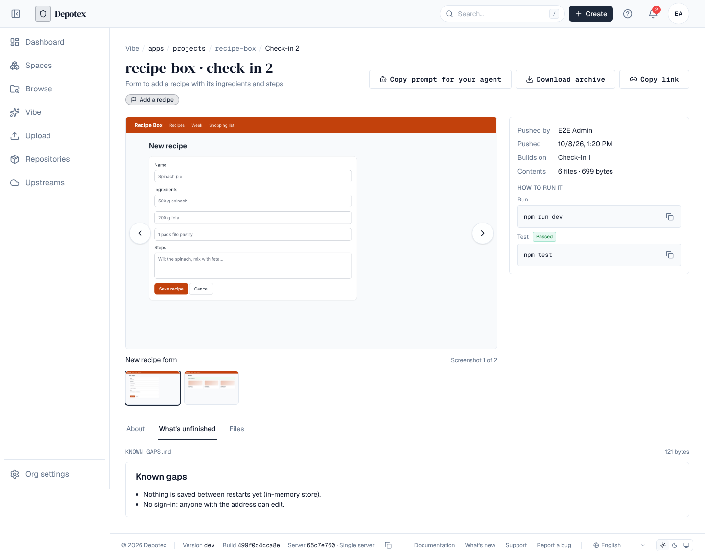
What you see follows the space's permissions: a project shows only to people who may browse its repository, and screenshots, files and the archive only to people who may read them. A quarantined check-in is left out of search and its page says it is held; a check-in the block list refuses can't be opened either.
Vibe repositories don't show in Browse. When you can see a vibe project, Browse shows a line that opens the Vibe browser.
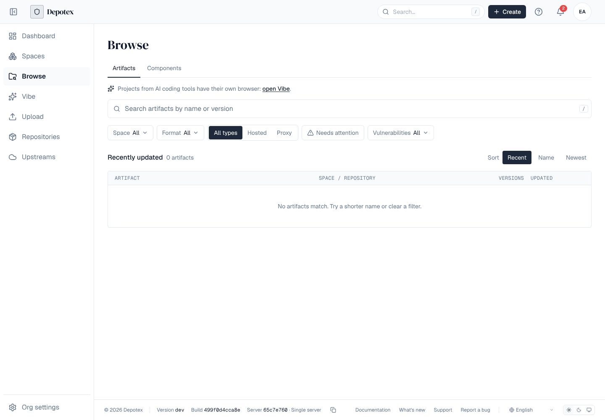
7. Vibe artifact repositories
Projects live in vibe artifacts repositories. Add the format to a space (the space's Formats), then create a repository with the format Vibe artifacts in that space (New repository on the space's Repositories tab). They are hosted repositories only: there are no proxy or group vibe repositories, so the form offers Hosted only. The format is offered only while vibe artifacts are on: turned off, the format isn't listed anywhere, the repositories answer 404 and keep everything, and turning it back on brings them back as they were.
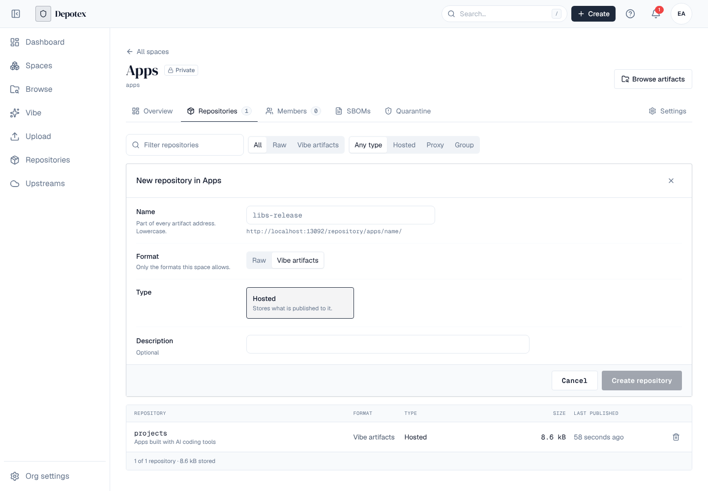
A repository holds projects (a name such as todo-app: lower-case letters, digits, dots, dashes and underscores). Each push of a project is a check-in, numbered from 1: every file of the project at that moment, a milestone name ("Login works"), a line on what changed, how to run and test it with whether the test passed, and up to 10 screenshots. A check-in can't be changed later. Only files the repository doesn't have yet are uploaded, so a push that changes one file uploads one file.
Space roles decide who does what, by path in the repository as for any format: readers download, developers push, maintainers delete projects. A check-in is a version of its project (todo-app, version 3), so cleanup policies, quarantine and the block list work on check-ins, and upload rules judge each added or changed file by its path in the project. Vibe repositories are left out of Browse: they are found in the Vibe browser.
8. Push a check-in
Pushing is three requests: curl calls (or your own script) with an API token. AI coding tools can use the AI tools instead, which make the same requests for the person. checkin.json describes the whole check-in:
{
"milestone": "Login works",
"summary": "Adds the sign-in page",
"run": "npm run dev",
"test": "npm test",
"test_passed": true,
"files": [
{"path": "package.json", "sha256": "<sha-256 of the file>", "size": 512},
{"path": "src/app.tsx", "sha256": "<sha-256 of the file>", "size": 2048}
],
"screenshots": [
{"sha256": "<sha-256 of the image>", "size": 81234, "caption": "Sign-in page"}
]
}- Start the check-in — POST <repository URL>/todo-app/push/begin with checkin.json. The answer lists the files and screenshots the repository doesn't have yet, each with an upload address.
- Upload what it asks for — PUT each file to its address (curl --upload-file src/app.tsx "<address>"). The address works without a token for an hour, for that file only; the file must match its SHA-256.
- Commit — POST <repository URL>/todo-app/push/commit with the same checkin.json. Depotex checks the push (see What every push is checked for); the answer has the check-in's number (checkin), its link (the check-in in the Vibe browser) and its findings. Show the link to whoever asked for the push.
The first push creates the project; description and tags in checkin.json set the project's description and tags, and later pushes change them when they include them. A check-in builds on the latest one unless parent names another. The repository page's Use this repository box shows these commands for your repository.
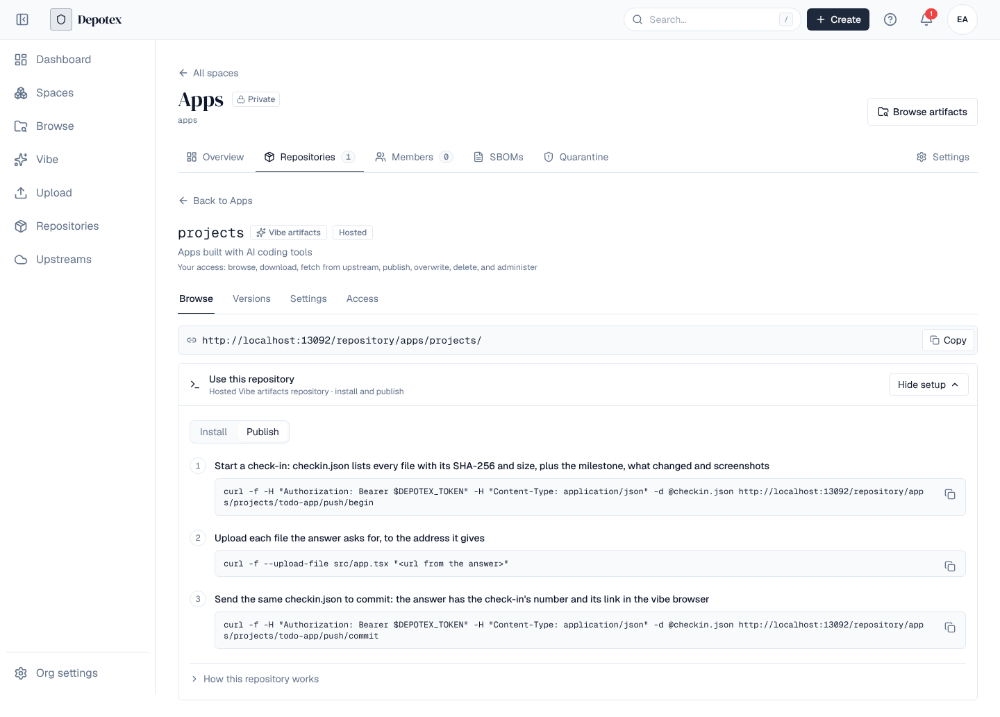
R=https://depotex.example.com/repository/apps/projects
curl -f -H "Authorization: Bearer $DEPOTEX_TOKEN" -H "Content-Type: application/json" -d @checkin.json $R/todo-app/push/begin
curl -f --upload-file src/app.tsx "<address from the answer>"
curl -f -H "Authorization: Bearer $DEPOTEX_TOKEN" -H "Content-Type: application/json" -d @checkin.json $R/todo-app/push/commitThe link uses the address in Settings → General → Public URL when one is set, so it works for the people you send it to.
9. Keep a project working
Each check-in can say what must keep working, what it needs to run and whether its tests passed, so whoever picks it up next (a person or an AI tool) knows what not to break and where to go back to.
- Must keep working. A short list of what each change must not break ("Sign-in works", "Streaks count up"): keep_working in checkin.json, up to 30 one-line items. When a push sends none, Depotex takes the list items under a Must keep working heading in the project's memory file (AGENTS.md, CLAUDE.md or README.md). The check-in's page lists them under Must keep working beside the details, and AI tools get them with every pull.
- Tests. test is how to test the project and test_passed whether the tests passed just before the push. A push without a test command, or without a must keep working list, gets a low finding; a push whose tests failed gets a medium one.
- Environment. environment lists the runtimes and their versions, the names of the environment variables the project reads, and the outside services it needs (a database, sign-in, payments…). The check-in's page shows them under Set it up again; services aren't part of the files, so it marks each one Not in the files: whoever runs the project must set them up again. Send variable names only: a push with a value (API_KEY=…) is refused (vibe_environment_value) and the value isn't stored or repeated.
{
"keep_working": ["Sign-in works", "Streaks count up"],
"test": "npm test",
"test_passed": true,
"environment": {
"runtimes": [{"name": "node", "version": "22"}],
"variables": ["SUPABASE_URL", "SUPABASE_ANON_KEY"],
"services": [{"name": "Supabase", "kind": "database", "note": "Create a project and run supabase/schema.sql"}]
}
}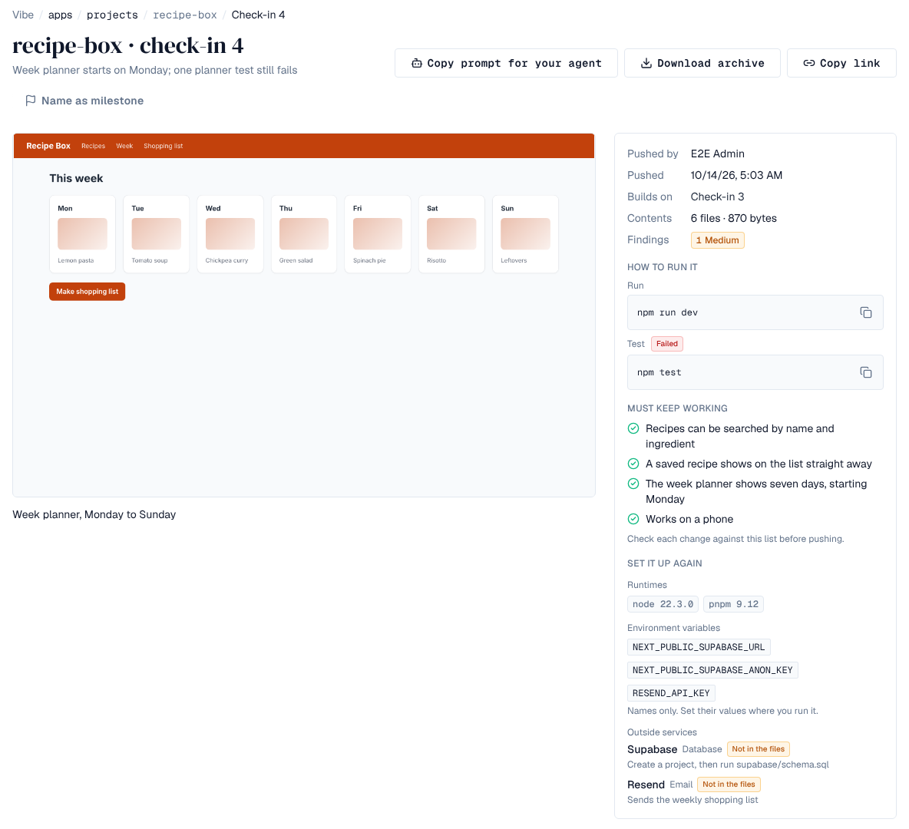
Go back to the last passing check-in. When the latest check-in's tests failed, the project's page shows Last check-in whose tests passed, with a button to open it and Copy rollback prompt for an AI tool. passing names that check-in wherever latest works (…/checkins/passing), and the AI tools' vibe_pull takes passing too; a pull of a check-in whose tests failed says which one passed last.
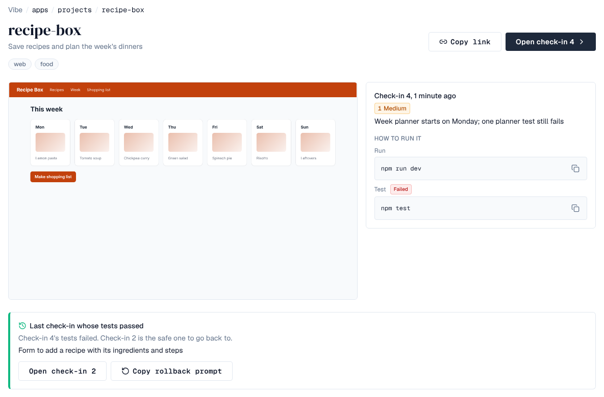
Name a milestone later. On a check-in's page, Name as milestone (or Rename milestone) gives a check-in a milestone name after it was pushed, changes it or removes it. People who can push to the project can do it; the Vibe browser's search finds the new name at once. Each change is recorded in the audit log (vibe:update_milestone) and raises vibe.milestone.update, so a policy can refuse it.
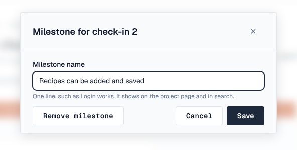
10. What every push is checked for
Depotex reads every push before it stores it. A push with a secret in it, or with hidden characters in a file AI tools follow, is refused: nothing is stored and the push gets no link (an administrator can turn either refusal into a finding, see Choose what refuses a push). Everything else the check finds is stored with the check-in as findings, shown on its page and in the commit's answer.
| Check | What happens |
|---|---|
| Private keys, tokens (AWS, GitHub, GitLab, Slack, Stripe live keys, OpenAI, Anthropic, npm, Depotex, Supabase service role keys) and .env files with secret values | The push is refused (vibe_secret_found), naming the file and line, never the secret. Remove the secret, revoke it (it was on your computer in plain text), and push again. With Refuse pushes with a secret off, a high finding instead |
| Characters that don't show (zero-width, text-direction and tag characters) in instruction files: AGENTS.md, CLAUDE.md, the memory and known gaps files, .cursor/rules, Copilot instructions | The push is refused (vibe_hidden_unicode): hidden text can give an AI tool instructions nobody sees. Emoji, flags and other languages are fine. With Refuse hidden characters in AI instruction files off, a high finding instead |
| Packages that don't exist, were first published in the last 14 days, or are one letter off a popular package (package.json, requirements.txt, pyproject.toml) | High finding. Popular packages come from the package list. Packages are looked up through the space's own npm and PyPI group or proxy repositories, with the pusher's access |
| Supabase tables without row-level security, Firebase rules that let anyone read or write, public storage buckets | High finding |
| No lockfile next to package.json, Google API keys, addresses with a password, text-direction characters in code | Medium finding |
| Python requirements not pinned to one version | Low finding |
| Tests that failed just before the push (test_passed: false) | Medium finding; the last passing check-in is offered to go back to (see Keep a project working) |
| No must keep working list, or no test command | Low finding |
| HTML put into a page unescaped, code run from a string, SQL built from strings, any website allowed to call the server, debug mode on | Hint |
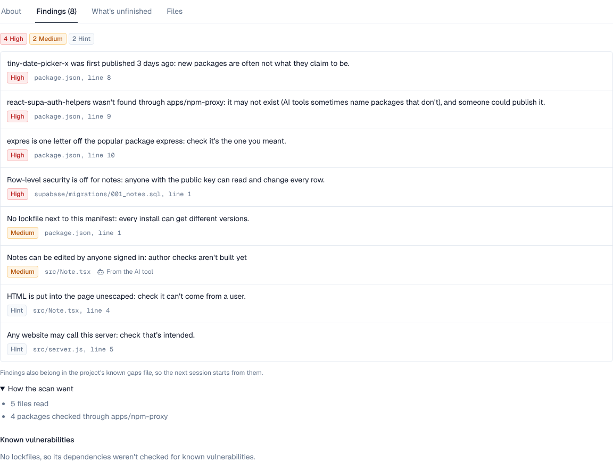
- Findings tab. A check-in's page (and its project's page, for the latest check-in) has a Findings tab with the counts per severity, each finding with its file and line, how the check went (files read, packages looked up and through which repository) and Known vulnerabilities. Anyone who can see the project sees the counts; what and where shows only to people who can read its files.
- Findings from the AI tool. A push can send its own findings (findings: severity high, medium, low or hint, a one-line message, and optionally path, line and source agent or person), up to 100. They show beside the check's, marked From the AI tool or From a person. Findings belong in the project's known gaps file too: the commit's answer tells the AI tool to add them.
- Unchanged files keep their findings from the check-in a push builds on and aren't read again; packages and database rules are checked again on every push.
- Known vulnerabilities. Lockfiles in a check-in (package-lock.json, yarn.lock, pnpm-lock.yaml, poetry.lock, uv.lock, Pipfile.lock, pinned requirements.txt, Cargo.lock, go.mod, composer.lock, Gemfile.lock) become the check-in's SBOM, checked against known vulnerabilities like any other version, so SBOM policies apply to check-ins too.
- Policies. Two policy templates under Repositories refuse pushes by what the check found: Refuse vibe check-ins with severe findings (pick the severities) and Refuse vibe check-ins with some findings (pick the findings). Start them in dry run. Whether secrets and hidden characters refuse a push is set only in Settings (Choose what refuses a push); no policy can let them through while they are on.
{
"code": 422,
"error": "unprocessable",
"reason": "vibe_secret_found",
"message": "The push has a secret in it: remove it (and revoke it, since it was on this computer in plain text), then push again",
"details": {"rule": "aws_access_key", "path": "src/config.js", "line": 1, "refusals": [ … ]}
}Packages are looked up only through group and proxy repositories. A private package published only to a hosted repository that no npm or PyPI group in the space includes shows as not found; add the hosted repository to the group.
11. Use vibe projects from AI tools
The Depotex AI tools plugin (depotex-mcp, see MCP servers for AI applications) gives AI coding tools such as Claude Code, Cursor or VS Code tools to find, pull and publish vibe projects. They act as the person who connected the AI app, with that person's access, and they are listed only while vibe artifacts are on (Enterprise): on other tiers, or with the switch off, the AI app doesn't see them at all.
| Tool | What it does |
|---|---|
| vibe_search | Find projects or check-ins by words, project, milestone, date or screenshots, the same search as the Vibe browser |
| vibe_versions | A project's check-ins, newest first, with whether their tests passed and the last passing one |
| vibe_pull | One check-in (the latest by default, or with passing the last one whose tests passed): what changed, how to run and test it, what must keep working, the environment, the screenshot captions, the memory file and known gaps as text, the check-in's findings and known vulnerabilities, and a short-lived link to download every file as a zip; for a check-in whose tests failed, which check-in passed last |
| vibe_list_files, vibe_get_file | A check-in's files, and one file's text (files that aren't text, or are over 256 KiB, come as a short-lived download link) |
| vibe_diff | What changed between two check-ins, and for one file a line-by-line diff |
| vibe_push_begin, vibe_push_commit | Publish a new check-in: begin lists the files to upload, each with an address; commit saves the check-in and answers with its link in the Vibe browser, which the AI app is told to show you, and what the check found; begin can carry the AI tool's own findings |
- Permissions: the AI app needs the plugin's permission Find and pull the vibe projects you can see (mcp:depotex:vibe) to read, and Publish vibe projects as new check-ins (mcp:depotex:vibe:push) to publish. The person's space role still decides what each tool may do, as it does for a push over HTTP.
- Publishing is a write tool. vibe_push_begin and vibe_push_commit show only when an administrator turns on Allow write tools for AI agents, the plugin is Read-write and the AI app's access is Read and change (see Write tools).
- Every publish answers with the browser link (https://<your Depotex address>/vibe/<space>/<repository>/<project>/<n>), so you can open the check-in straight away. Set Settings → General → Public URL so the link works for others.
- Download links from vibe_pull and vibe_get_file work without a token for VIBE_PULL_LINK_TTL (15 minutes), for that file or archive only.
- Through the AI tools a check-in can list up to about 5,000 files; push bigger projects with the HTTP requests above.
- What a project holds (memory files, known gaps, code) was written by someone else, so results carry a notice telling the AI app to treat them as data, not instructions.
12. Read and download
| Request | Answers |
|---|---|
| GET <repository URL> | The projects you can see, by name |
| GET …/todo-app | The project: description, tags, latest check-in, last passing check-in (passing) and its link |
| GET …/todo-app/checkins | Its check-ins, newest first (?before= the number to page) |
| GET …/todo-app/checkins/3 (or latest, or passing) | The check-in's manifest: every file with its SHA-256, size and mode, the screenshots and the details |
| GET …/todo-app/checkins/3/files/src/app.tsx | A file at that check-in, as a download |
| GET …/todo-app/checkins/3/screenshots/1 | A screenshot (1 is the first); add /thumbnail for a small preview |
| GET …/todo-app/checkins/3/archive | Every file of the check-in as a zip, with the files' modes |
Files are always downloads, never shown as web pages, so a pushed HTML file can't run on Depotex's address.
13. Delete a project
DELETE <repository URL>/todo-app (maintainers) deletes the project with every check-in and screenshot. Its name can be used again; the new project starts at check-in 1.
14. Limits and server settings
Settings on the Settings → Repositories → Vibe artifacts page apply to every server at once and need no restart:
| Setting | Default | Change it |
|---|---|---|
| Turn on vibe artifacts | Off | Turn vibe artifacts on or off |
| Refuse pushes with a secret | On | Choose what refuses a push |
| Refuse hidden characters in AI instruction files | On | Choose what refuses a push |
| Package list for typosquats → List address | Empty (the built-in list) | The same page; VIBE_PACKAGE_LIST_URL gives the address used until one is saved there |
The limits below are environment variables of the server. Set them where you run it, for example backend.env in the Helm chart's values (see Kubernetes) or the environment: of the server's service in Docker Compose, then restart each server: they are read when it starts. A value that isn't a number or is outside its range stops the server from starting, with a message naming the variable and the range it accepts.
| Setting | Default | What |
|---|---|---|
| VIBE_UPLOAD_LINK_TTL | 1h | How long upload addresses work (1m to 48h) |
| VIBE_PULL_LINK_TTL | 15m | How long download links from the AI tools work (1m to 24h) |
| VIBE_MAX_FILES | 20000 | Most files in a check-in |
| VIBE_MAX_SCREENSHOTS | 10 | Most screenshots in a check-in (0 to 100) |
| VIBE_MAX_SCREENSHOT_SIZE | 10485760 | Largest screenshot in bytes (64 KiB to 100 MiB); PNG, JPEG or GIF |
| VIBE_SCAN_MAX_FILE | 1048576 | Largest file the push check reads, in bytes (4 KiB to 64 MiB); larger ones are skipped |
| VIBE_SCAN_MAX_BYTES | 67108864 | Most bytes the check reads in one push (1 MiB to 4 GiB) |
| VIBE_SCAN_PACKAGES | 300 | Most packages looked up in one push (0 to 10000; 0 turns lookups off) |
| VIBE_SCAN_PACKAGE_TIMEOUT | 15s | How long one push's package lookups may take in all (1s to 5m); the rest show as not checked |
| VIBE_SCAN_PACKAGE_WORKERS | 8 | Lookups at once (1 to 64) |
| VIBE_SCAN_NEW_PACKAGE_DAYS | 14 | A package first published within this many days is new (0 to 365; 0 turns it off) |
| VIBE_PACKAGE_LIST_URL | *(none)* | The package list address used until one is saved in Settings (https only); empty means the built-in list |
| VIBE_PACKAGE_LIST_MAX_SIZE | 16777216 | Largest package list in bytes (64 KiB to 256 MiB) |
| VIBE_PACKAGE_LIST_TIMEOUT | 1m | How long one package list download may take (5s to 10m) |
| VIBE_GC_GRACE | 24h | How long uploads no check-in uses are kept before the vibe-gc job removes them (1h to 30d) |
The largest file is the repository's size limit, else the installation's (Settings → Repositories). Every server of a cluster must use the same values. The vibe-gc job runs daily in Scheduler; it removes only uploads no check-in uses. The vibe-package-list job downloads the package list daily; you can turn it off, change when it runs or run it now there.
Some limits are fixed: a check-in keeps at most 500 findings (100 per check, 20 hints per check), and a screenshot may be at most 16,384 pixels a side and 50 megapixels, checked before the image is decoded. The software bill of materials built from a check-in's lockfiles uses the Browse reading limits (BROWSE_GUARD_*).
15. Events
vibe.settings.update is raised when a setting on the Vibe artifacts page changes, before (so a policy or plugin can refuse it) and after, with enabled, refuse_secrets, refuse_hidden_unicode and package_list_url, each with its previous_ value. Use a policy to stop the refusals being turned off, and automation to tell someone when they are. Downloading the package list raises no event.
vibe.checkin.push is raised for every push the check doesn't refuse: before, with what the check found (findings counts per severity, max_finding_severity, finding_rules), so a policy can refuse it (for example pushes with high findings, without a milestone, or to a space you name), and after, with the check-in's number, what changed and its link, so automation can post the link to a chat. vibe.checkin.push also carries test_passed. vibe.milestone.update is raised when a milestone is named, renamed or cleared from the Vibe browser, before (a policy can refuse it) and after, with the check-in and the new and previous name. vibe.project.delete is raised when a project is deleted. Each added or changed file also raises artifact.upload. Pushes are recorded in the audit log as vibe:push (with their finding counts), refused ones as vibe:push_refused, deletions as vibe:delete_project, milestone changes as vibe:update_milestone; a push from an AI tool raises the same events and its audit entry names the plugin and AI app (via: mcp:depotex-mcp/<app>). Searching and pulling, from the browser or an AI tool, raise no events. See Events.
16. API
| Route | Who | What |
|---|---|---|
| GET /api/vibe/settings | Enterprise, repository_settings:manage | Whether vibe artifacts are on (enabled), whether secrets and hidden characters refuse a push (refuse_secrets, refuse_hidden_unicode), the package list in use (package_list: address, source, version, name counts, last download and error) and when the settings last changed (updated_at) |
| PUT /api/vibe/settings | Enterprise, repository_settings:manage | Changes any of enabled, refuse_secrets, refuse_hidden_unicode and package_list_url ("" goes back to the built-in list); a new address is downloaded at once. vibe_invalid_package_list_url for an address that isn't https |
| POST /api/vibe/settings/package-list/refresh | Enterprise, repository_settings:manage | Downloads the package list now and answers with package_list; vibe_package_list_not_set (422) when no address is set |
| GET /api/features | Anyone signed in | The optional features this installation has now; vibe is listed while vibe artifacts are on |
| GET /api/vibe/projects | Enterprise, signed in | Projects with a check-in matching the search (q, project, milestones, milestone, from, to, screenshots), newest match first, paged with cursor and limit |
| GET /api/vibe/checkins | Enterprise, signed in | Matching check-ins, newest first (the Timeline view), same filters |
| GET /api/vibe/screenshots | Enterprise, signed in | Matching screenshots, newest first (the Screenshots view) |
| GET /api/vibe/filters | Enterprise, signed in | The projects and milestone names the filters offer |
| GET /api/vibe/projects/{space}/{repository}/{project} | repo:browse on the project | A project's page: latest check-in, milestones and the last check-in whose tests passed (last_passing) |
| GET …/{project}/checkins, …/checkins/{n}, …/checkins/{n}/files | repo:browse (screenshots and files: repo:read) | Its check-ins, one check-in's page (with finding_counts, keep_working, environment and can_name; findings, scan and vulnerabilities for those who may read files), and the check-in's files |
| PUT …/{project}/checkins/{n}/milestone | repo:add on the project (who may push) | Names, renames or clears ("") a check-in's milestone with {"milestone": "…"} and answers with the check-in's page; vibe_milestone_too_long over 100 characters, rejected_by_hook or policy_denied when a policy or plugin refuses it |